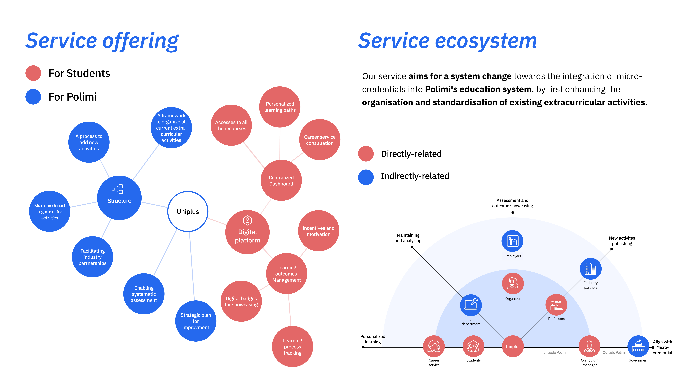

UniPlus
Micro-credential platform for Politecnico di Milano
Context
UniPlus is a cutting-edge platform transforming how students study, engage, and grow. Built around the Jenga model, UniPlus integrates foundational courses with extracurricular activities, fostering uniquely skilled professionals. Fully compliant with European micro-certification standards, it ensures global recognition.
Problem
Three core gaps blocked adoption: fragmented discovery, weak standard alignment, and an inconsistent publish workflow between professors and partners.

See Details

Process
Through co-design sessions and low-fidelity prototyping with stakeholders, we aligned students’ decision-making moments with organizers’ publishing workflows. This process led to a clearer platform concept, a more defined service model, and the identification of key UX entry points across the end-to-end experience.

See Details




Interface
The final concept transforms complex decision-making into a series of guided actions—helping students discover opportunities, compare their fit, enroll with clarity, track supporting evidence, and gradually build a visible and credible credential pathway over time. View Prototype


Outcome
UniPlus proposes a scalable structure that improves decision clarity for students, creates greater consistency for organizers, and makes learning outcomes more traceable—while also opening up the possibility for the platform to be formally adopted by the university as part of its official student service ecosystem.